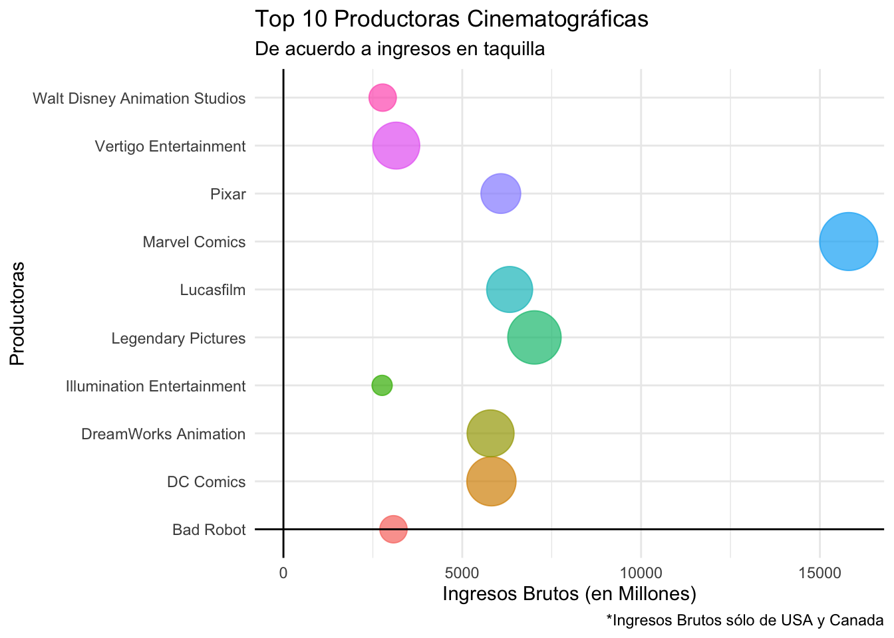
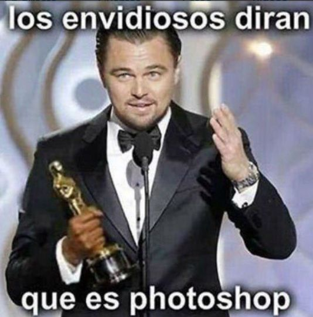
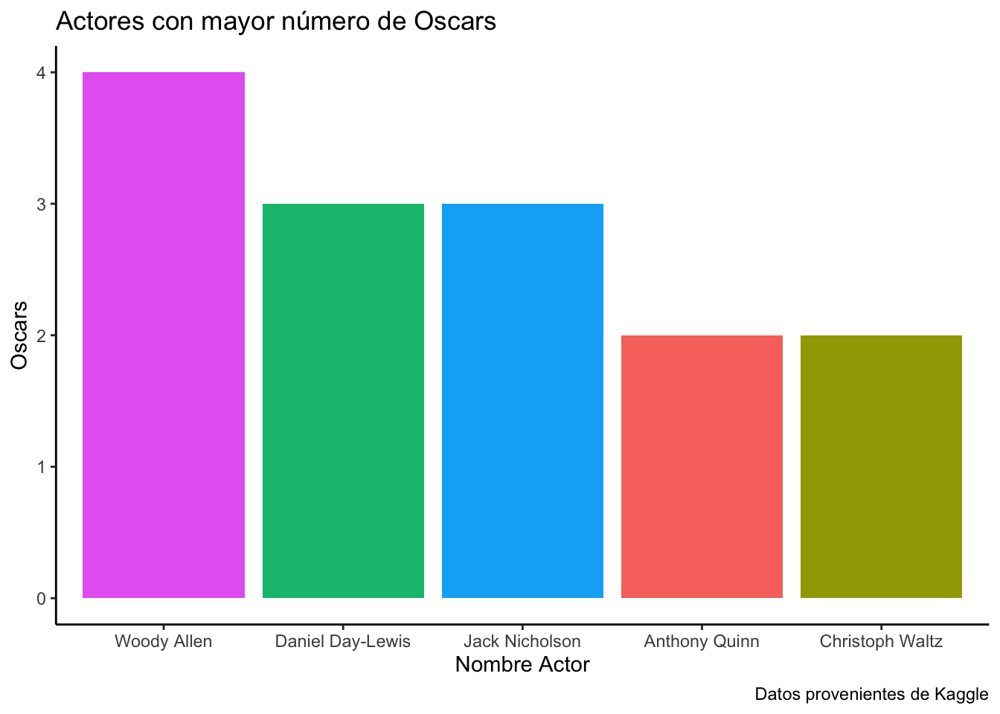
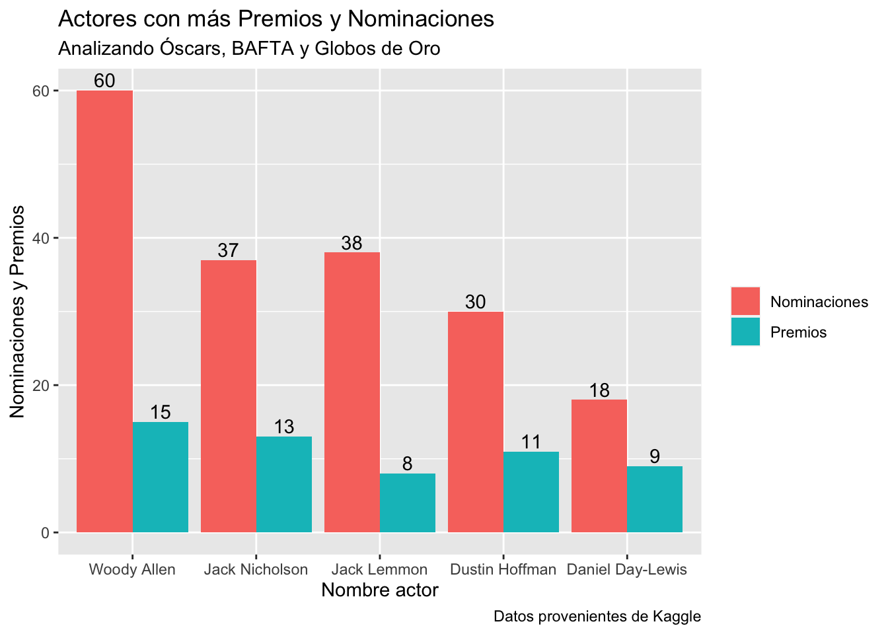

Exploración de datos y presentación visual de los éxitos en esta industria.
trabajo BigData
Autores/as
Dana Bauer
Ricardo Freire
Elena Paredes
Fecha de publicación
1 de diciembre de 2023
Introducción
El objetivo de este proyecto es analizar y visualizar datos clave de la industria cinematográfica y proporcionar una visión integral de lo que han sido “éxitos” en este contexto. Aquí destacamos el rendimiento financiero que han tenido las películas, pero también consideramos tendencias con respecto a género y franquicias/marcas y además hacemos una mención adicional a los actores de Hollywood con más reconocimientos en la escena internacional.
Datos
Para el trabajo hemos usado tres fuentes de datos principales:
1. Box Office Mojo: Es una website que contiene datos de películas y que mide su rendimiento financiero en taquilla. Organiza los datos en diferentes subgrupos como género, franquicia, etc. Aunque la información es muy valiosa, reconocemos que es límitada ya que en ciertos apartados solo contiene información de USA y Canadá. 2. IMDB: El “Internet Movie Data Base” contiene información general de las TOP 100 pelícuas a nivel mundial. Clasificadas por ratings del público. 3. Top 100 Hollywood Actors: Es un dataframe obtenido de Kaggle. Es un ranking objetivo de los actores de Hollywood basando en premios y nominaciones.
Packages y Carga de Datos
Código
# Estos son los Packages que hemos utilizadolibrary(tidyverse)library(ggplot2)library(plotly)library(gt)library(ggThemeAssist)library(plotly)library(sf)library(maps)library(tmap)library(viridis)# Importamos datosimbd_allTime <-read.csv("data/IMDB_Top1000_2023.csv")boxoffice_top_world <-read.csv("data/Boxoffice_Reveneus/boxofficemojointernationaltop1000.csv")boxoffice_brands <-read.csv("data/Boxoffice_Reveneus/boxofficemojobrandindices.csv")boxoffice_genres <-read.csv("data/Boxoffice_Reveneus/boxofficemojotopgenres.csv")boxoffice_fran <-read.csv("data/Boxoffice_Reveneus/boxofficemojotopfranchises.csv")actors <-read.csv("data/Top100_GOAT_Hollywood_Actors.csv")
1. Las más exitosas de todos los tiempos
Existen diferentes maneras de medir el éxito de una película. Sin embargo, nosotros/as aquí consideraremos dos métricas: el desempeño en taquilla y la opinión del público.
Para la primera usaremos el dataset de Boxoffice Mojo que contiene lás películas más taquilleras de todos los tiempos. A continuación una tabla y un gráfico que muestran estos éxitos.
Código
bo_allTime <- boxoffice_top_world %>%select(Rank, Title, Worldwide.Lifetime.Gross, Year)#Tablat1 <- bo_allTime %>%slice_max(n =5, order_by =-Rank) %>%#ascending order gt() %>%cols_label( Title ="Título" ,Worldwide.Lifetime.Gross ="Ingresos Brutos", Year ="Año") %>%cols_width(c(Worldwide.Lifetime.Gross, Year) ~px(60)) %>%fmt_number(columns =c(Worldwide.Lifetime.Gross),decimals =0, sep_mark =",") %>%tab_header(title ="Top 5 Películas",subtitle ="Basado en éxito en taquilla") %>%tab_source_note(md("Fuente: datos de [BoxOffice Mojo ](https://www.kaggle.com/datasets/somnath2/box-office)")) %>%tab_footnote(footnote ="Dataset extraido de Kaggle", placement ="right",location =cells_title("title")) t1
Como podemos ver las películas más taquilleras de la historia son ‘Avatar’, estrenada en 2009, con un total generado en taquilla de ($2 847 246 203, es decir, dos mil ochocientos cuarenta y siete millones doscientos cuarenta y seis mil doscientos tres, o más sencillo ~$2,8 mil millones), seguido por ‘Avengers: Endgame’ (~2,8 mil millones) y ‘Titanic’ (~$2,2 Mil Millones).
Fun fact: No es menor decir que la diferencia entre los puestos uno y dos es mínima, con un aproximado de 50M. Como podemos ver, es innegable que las películas de acción y superhéroes han generado un fuerte interés en el público.
2. Marcas Cinematográficas
Bueno, ahora consideramos la “big picture” y en vez de analizar cada película individualmente, analizaremos las grandes productoras detrás de ellas. También desde una perspectiva financiera.
Como podemos ver las productoras que encabezan la lista son: Marvel Comics, Legendary Pictures y Lucasfilms. Como se ha mencionado, estas marcas producen películas de superhéroes y acción.
Código
#|code-fold: truetop_stud_tab <- boxoffice_brands %>%slice_max(n =5, order_by = Total) %>%select(Brand, Releases) #Tablat3 <- top_stud_tab %>%gt() %>%cols_label( Brand ="Marcas",Releases ="Lanzamientos") %>%# cols_width(c(Brand, Releases) ~ px(60)) %>%tab_header(title ="Top Productoras", subtitle ="Basado en éxito en taquilla") %>%tab_source_note(md("Fuente: datos de [BoxOffice Mojo ](https://www.kaggle.com/datasets/somnath2/box-office)"))%>%tab_footnote(footnote ="*Ingresos Brutos solo de USA y Canada", placement ="right",location =cells_title("title")) t3
El próximo gráfico muestra las top 10 marcas con más ingresos netos generados en toda su historia. El tamaño representa el número de títulos publicados. Marvel Comics es la productora que tiene una clara distinción, esto se debe a que primero contiene algunas películas que están en el top en taquilla, lo que probablemente extrapola sus ingresos, y que además es dueño de varias franquicias famosas tales como: ‘Marvel Cinematic Universe’ o ‘Spiderman’.
Código
top_brands <- boxoffice_brands %>%slice_max(n =10, order_by = Total)top_brands$Brand <-as.factor(top_brands$Brand) #Brands as factor#Bubble Plotbubble_chart <-ggplot(top_brands, aes(x = Total/ (1000000), y = Brand, size = Releases, color = Brand)) +geom_point(alpha =0.7) +xlim(c(0,16000)) +scale_size_continuous(range =c(5, 15)) +#Setea el tamaño de los puntoslabs(title ="Top 10 Productoras Cinematográficas",subtitle ="De acuerdo a ingresos en taquilla",caption ="*Ingresos Brutos sólo de USA y Canada",x ="Ingresos Brutos (en Millones)",y ="Productoras",size ="Releases",color =NULL) +geom_vline(xintercept =0) +geom_hline(yintercept ="Bad Robot") +theme_minimal() +theme(legend.title =element_blank()) +theme(legend.position ="none")bubble_chart

3. Las Mejores de la historia…de acuerdo al Público
La segunda métrica que usaremos para medir el éxito de una película son las críticas del público. Para ello usaremos la “Internet Movie Database”. Así que a continuación, presentamos cuáles son las películas con mejores ratings del público de la historia.
Código
#Filtramos las 10 mejores películas según las críticas del públicoimbd_top_five <- imbd_allTime %>%select(-X) %>%arrange(desc(rating)) %>%distinct(title, .keep_all =TRUE) %>%# Ordenar de mayor a menor ratingslice_head(n =5) # Seleccionamos las 5 mejores películas#Creamos una tabla con las 5 mejores películas según las críticas del públicobest_rated_table <- imbd_top_five %>% dplyr::mutate(Rank =row_number()) %>%# Agregamos una columna de rango empezando desde 1gt() %>%cols_move_to_start("Rank") %>%cols_label(title ="Título",rating ="Rating",release_year ="Año",genre ="Género" ) %>%fmt_number(columns =c("rating"), decimals =1) %>%tab_header(title ="Top 5 Películas Mejor Calificadas por el Público",subtitle ="Basado en las calificaciones de IMDb" ) %>%tab_source_note(md("Fuente: datos de [IMDb](data/IMDB_Top1000_2023.csv)") )# Imprimir la tablabest_rated_table
Como era de esperarse (aúnque para algunos talvez no era obvio), las películas más aclamadas por el público no son todas de superhéroes sino que son grandes clásicos: The Shawshank Redemption de Frank Darabont y The Godfather de Francis Ford Coppola. Estos resultados nos dan dos puntos claves. Primero, existen diferentes métricas para medir el éxito en taquilla, Segundo, los géneros de acción y superhéroes no han sido los favoritos a lo largo de todos los tiempos, sino que posiblemente han tenido un auge en los años recientes.
4. IMBD Rating y Directores
Con los datos obtenidos de la página web IMDb, (Internet Movie Database) que hemos mencionado en el punto anterior, podemos obtener la nota o “rate” que los usuarios han fijado para las diferentes películas.
Obteniendo la nota media de estas películas, también es posible ordenar por mejores directores en base a estos parámetros.
En la tabla siguiente, mostramos los mejores directores ordenados por la nota media que han recibido las películas que han dirigido cada uno en función a las opiniones de los usuarios de IMDb, ordenados de mayor a menor. Por tanto, el director con mayor puntuación es el mejor valorado.
Código
#- Primero agrruparemos por directores, obtendremos la media de las películas y obtendremos los 5 primeros con mejor rateimbd_director <- imbd_allTime %>%group_by(director) %>%summarise(Avg_rating =mean(rating, na.rm =TRUE)) %>%ungroup() %>%slice_max(Avg_rating, n =10) %>%head(., n =10)#- A continuación, creamos una tabla con los resultadosimbd_director %>%mutate(Rank =row_number(), .before = director) %>%gt() %>%cols_label(director ="Director",Avg_rating ="Nota media" ) %>%fmt_number(columns =c("Avg_rating"), decimals =1) %>%tab_header(title ="Top 10 Directores de cine",subtitle ="Según valoración de los usuarios de IMDb" ) %>%tab_source_note(md("Fuente: datos de [IMDb](data/IMDB_Top1000_2023.csv)"))
Joaquim Dos Santos sería el mejor director valorado, por lo tanto, ha dirigido las películas que tienen mejor “rate” de IMDb.
4.1 Puntuaciones según MetaScore
En la página IMDb, también encontramos un parámetro llamado “Metascore”, el cual pertenece a la página Metacritic. Esta puntuación es obtenida según la opinión de los críticos de cine, en un rango entre 0 y 100.
Esto es debido a que muchas veces, desde foros u otras páginas web tales como Reddit o 4Chan, realizan “ataques organizados” con los usuarios para que las películas tengan malas o buenas puntuaciones sin reflejar la realidad. Los usuarios también rechazan las opiniones de los críticos, ya que pueden tener intereses ocultos o ciertas empresas pueden alentarles a tener opiniones concretas.
En la siguiente tabla, mostramos los 10 mejores directores según este “Metascore”, con la nota media de las películas que han dirigido, siendo 100 la mayor puntuación.
Código
#- Repetiremos el mismo proceso para obtener la segunda tablaimbd_metacritic <- imbd_allTime %>%group_by(director) %>%summarise(Avg_score =mean(metascore, na.rm =TRUE)) %>%ungroup() %>%slice_max(Avg_score, n =10) %>%head(., 10)#- A continuación, creamos la tablaimbd_metacritic %>%mutate(Rank =row_number(), .before = director) %>%gt() %>%cols_label(director ="Director",Avg_score ="Metascore" ) %>%fmt_number(columns =c("Avg_score"), decimals =1) %>%tab_header(title ="Top 10 Directores de cine",subtitle ="Según Metascore" ) %>%tab_source_note(md("Fuente: datos de [IMDb](data/IMDB_Top1000_2023.csv)"))
Como se puede observar entre las dos tablas, las opiniones de los críticos y los usuarios son dispares.
5. GOAT Actores
A la hora de determinar cuál sería el mejor actor de todos los tiempos, es difícil ajustarse a un criterio concreto u objetivo.
Existen casos como el de Leonardo Dicaprio, el cual sería considerado un GOAT (“Greatest Of All Time”) tanto por los críticos más duros como por la gente sin nociones de cine, pero que en toda su carrera artística sólo ha recibido un premio Óscar.

Óscar por mejor actor en la película “El renacido”
A continuación, presentamos un gráfico de barras que muestra los actores con el mayor número de Óscares ganados, por ser considerado uno de los galardones más importantes.
Código
#- Primero organizamos los datos con los 10 actores con más Óscars ganadosactors_oscar <- actors %>%select(Name, Oscars) %>%arrange((desc(Oscars))) %>%slice_head(., n =5)#- A continuación, realizamos el gráfico de barrasggplot(actors_oscar) +geom_bar(aes(x =reorder(Name, -Oscars), y = Oscars, fill = Name), stat ="identity", show.legend =FALSE) +labs(title ="Actores con mayor número de Oscars",x ="Nombre Actor",y ="Oscars",caption ="Datos provenientes de Kaggle") +theme_classic()

Woody Allen sería el actor que más Óscares ha ganado.
Adicionalmente, podríamos tener en cuenta todas las nominaciones a premios Óscar, BAFTA y Globos de Oro, así como las veces que un actor ha ganado en estas tres categorías, para analizar cuál es el más laureado y aclamado.
Código
#- Organizaremos los datos sumando todas las nominaciones y premios para cada actor, pasaremos a formato long y haremos el gráfico de barrasactors_prizes <- actors %>%mutate(prizes_total = Oscars + BAFTA + Golden.Globes, nominations_total = Oscar.Nominations + BAFTA.Nominations + Golden.Globe.Nominations) %>%select(Name, prizes_total, nominations_total) %>%slice_max(tibble(prizes_total, nominations_total), n =5) %>%pivot_longer(cols =2:3, names_to ="totals", values_to ="values") %>%ggplot(aes(reorder(Name, -values), values, fill = totals)) +geom_bar(stat="identity", position="dodge") +geom_text(aes(label = values), position =position_dodge(width=0.9), vjust=-0.25) +labs(title ="Actores con más Premios y Nominaciones",subtitle ="Analizando Óscars, BAFTA y Globos de Oro",caption ="Datos provenientes de Kaggle",x ="Nombre actor",y ="Nominaciones y Premios",fill =NULL, ) +scale_fill_discrete(labels =c("Nominaciones", "Premios"))actors_prizes

Como podemos observar, Woody Allen volvería a ser el actor con más nominaciones y más premios recibidos, aunque el resto de actores son diferentes, excepto Jack Nicholson, que ocuparía el segundo puesto.
En el siguiente punto analizaremos cómo los Óscars se han repartido geográficamente.
6. Análisis Geográfico: Actores
Por último, como pequeño bonus, queremos realizar un mapa de como estan distribuidos los 100 actores más populares de Hollywood.
Y, como era de esperarse, Estados Unidos tiene una clara ventaja, contando con 47 actores, seguido por Inglaterra con 13. Este se debe probablemente a que Hollywood esta ubicado en este USA y que los dos países hablan el idioma de la industria. Por lo que hace mucho sentido esta distribución.
Código
#Ubicación geográfica de los 100 actores ganadores de Oscaractors_by_country <- actors %>%group_by(Place.of.Birth, Name) %>%summarise(NumActors =n_distinct(Name),TotalOscars =sum(Oscars, na.rm =TRUE)) %>%ungroup() %>%filter(TotalOscars >0) %>%mutate(Country =sub(".*,\\s*(.*)$", "\\1", Place.of.Birth)) #Creamos una nueva columna "Country" para quedarnos sólo con el nombre del país de procedencia de cada actor# Contamos el número de actores ganadores por paísactors_by_country_count <- actors_by_country %>%group_by(Country) %>%summarise(NumActors =sum(NumActors)) #Creamos el mapa interactivomap_plot <-plot_geo(data = actors_by_country_count,locations =~Country,color =~NumActors,text =~paste("País: ", Country, "<br>Número de Actores: ", NumActors),colors ="Blues") %>%add_trace(z =~NumActors,locations =~Country,type ="choropleth",locationmode ="country names",colorscale ="Blues",showscale =FALSE ) %>%layout(title ="Distribución de Top Actores Ganadores de Oscars por País",geo =list(showframe =FALSE,projection =list(type ="mercator") ),height =900, width =800 ) %>%config(displayModeBar =FALSE) # Para ocultar la barra de herramientas del gráfico# Mostramos el mapa interactivomap_plot
7. Conclusión
En este proyecto, hemos explorado diversos aspectos de la industria cinematográfica tales como rendimiento financiero de las películas, las principales marcas cinematográficas, las películas mejor calificadas por el público, las valoraciones de directores según usuarios y críticos, y la destacada presencia de actores en el escenario internacional.
Desde el punto de vista financiero, películas como “Avatar” y “Avengers: Endgame” lideran las taquillas, demostrando el impacto significativo de los géneros de acción y superhéroes en la preferencia del público. Al analizar las grandes productoras, podemos reforzar esta conclusión la cual es respaldada no solo por éxitos en taquilla, sino también por la propiedad de franquicias emblemáticas.
Adicionalmente, al analizar el Rating y el Metascore de películas emblemáticas descubrimos el hecho de que las opiniones del público y de los críticos expertos difieren mucho. Este contraste subraya la complejidad y subjetividad del arte cinematográfico.
En el ámbito actoral, el análisis de premios Oscar destaca a Woody Allen como actor, mientras que una evaluación más amplia que incluye nominaciones y premios en Oscar, BAFTA y Globos de Oro revela una variada distribución de reconocimientos entre diversos actores.
Finalmente, podemos decir que este proyecto proporciona una visión integral de la industria cinematográfica, destacando su diversidad, las diferentes métricas para medir el éxito, y las variadas opiniones de críticos y audiencia. La cinematografía se revela como un campo dinámico donde los éxitos se pueden medir de múltiples maneras y a menudo subjetivas.
Con esto acabo mi trabajo para BigData!!
Información sobre la sesión
Abajo muestro mi entorno de trabajo y paquetes utilizados
Código de las fotos de fondo utilizadas en las Slides
#- https://stability.ai/ #- imágenes desde R con Stability: https://github.com/schochastics/stabilityAI
pak::pak(“schochastics/stabilityAI”)
#- vamos a: https://platform.stability.ai/ #- continuamos con nuestra Google account y aceptamos #- se nos creará una API key. La copias: xx-sbbbbbsbsbbsbbsbsbbsbsbbsbsbsbbsbsbsbbsbsbsbsbU
usethis::edit_r_environ() #- has de poner: #- STABILITYAI_TOKEN=“tu-API-key”
#- ya podemos usar Stability desde R library(stabilityAI) stabilityAI::get_engines_list() stabilityAI::generate_txt2img()
#- img <- stabilityAI::generate_txt2img( #- text_prompts = “A dude with no hair and a beard sitting in front of his laptop in a dark room”, #- style_preset = “pixel-art”)
my_IA_img <- stabilityAI::generate_txt2img( text_prompts = “image of the film industry, retro style with warm and nostalgic colors that evokes the golden age of cinema with a vintage touch”, #style_preset = “pixel-art” #- https://platform.stability.ai/docs/api-reference#tag/v1generation/operation/textToImage )
#- API returns the image base64 encoded. Save it as png with stabilityAI::base64_to_img(my_IA_img ,“./imagenes/my_IA_img4”)
Ejecutar el código
---title: "Análisis de la Industria Cinematográfica"description: | Exploración de datos y presentación visual de los éxitos en esta industria.author: - name: Dana Bauer - name: Ricardo Freire - name: Elena Paredesdate: 2023-12-01 #--categories: [trabajo BigData] #--image: "./imagenes/imagen_01.png"title-block-banner: "#C32A2A" # Color del bannertitle-block-banner-color: "white" #Color del texto en bannertoc: truetoc-location: lefttoc-depth: 3smooth-scroll: trueformat: html: mainfont: serif #backgroundcolor: "#F1F3F4" #embed-resources: true link-external-newwindow: true #css: ./assets/my_css_file.css #- CUIDADO!!!!code-tools: truecode-link: trueexecute: echo: true---## IntroducciónEl objetivo de este proyecto es analizar y visualizar datos clave de la industria cinematográfica y proporcionar una visión integral de lo que han sido "éxitos" en este contexto. Aquí destacamos el rendimiento financiero que han tenido las películas, pero también consideramos tendencias con respecto a género y franquicias/marcas y además hacemos una mención adicional a los actores de Hollywood con más reconocimientos en la escena internacional.### DatosPara el trabajo hemos usado tres fuentes de datos principales: <br><br> **1. Box Office Mojo**: Es una website que contiene datos de películas y que mide su rendimiento financiero en taquilla. Organiza los datos en diferentes subgrupos como género, franquicia, etc. Aunque la información es muy valiosa, reconocemos que es límitada ya que en ciertos apartados solo contiene información de USA y Canadá. <br> **2. IMDB**: El "Internet Movie Data Base" contiene información general de las TOP 100 pelícuas a nivel mundial. Clasificadas por ratings del público.<br> **3. Top 100 Hollywood Actors**: Es un dataframe obtenido de Kaggle. Es un ranking objetivo de los actores de Hollywood basando en premios y nominaciones.<br>### Packages y Carga de Datos```{r }#| code-fold: true# Estos son los Packages que hemos utilizadolibrary(tidyverse)library(ggplot2)library(plotly)library(gt)library(ggThemeAssist)library(plotly)library(sf)library(maps)library(tmap)library(viridis)# Importamos datosimbd_allTime <-read.csv("data/IMDB_Top1000_2023.csv")boxoffice_top_world <-read.csv("data/Boxoffice_Reveneus/boxofficemojointernationaltop1000.csv")boxoffice_brands <-read.csv("data/Boxoffice_Reveneus/boxofficemojobrandindices.csv")boxoffice_genres <-read.csv("data/Boxoffice_Reveneus/boxofficemojotopgenres.csv")boxoffice_fran <-read.csv("data/Boxoffice_Reveneus/boxofficemojotopfranchises.csv")actors <-read.csv("data/Top100_GOAT_Hollywood_Actors.csv")```------------------------------------------------------------------------## 1. Las más exitosas de todos los tiemposExisten diferentes maneras de medir el éxito de una película. Sin embargo, nosotros/as aquí consideraremos dos métricas: el desempeño en taquilla y la opinión del público.Para la primera usaremos el dataset de Boxoffice Mojo que contiene lás películas más taquilleras de todos los tiempos. A continuación una tabla y un gráfico que muestran estos éxitos.```{r}#| code-fold: truebo_allTime <- boxoffice_top_world %>%select(Rank, Title, Worldwide.Lifetime.Gross, Year)#Tablat1 <- bo_allTime %>%slice_max(n =5, order_by =-Rank) %>%#ascending order gt() %>%cols_label( Title ="Título" ,Worldwide.Lifetime.Gross ="Ingresos Brutos", Year ="Año") %>%cols_width(c(Worldwide.Lifetime.Gross, Year) ~px(60)) %>%fmt_number(columns =c(Worldwide.Lifetime.Gross),decimals =0, sep_mark =",") %>%tab_header(title ="Top 5 Películas",subtitle ="Basado en éxito en taquilla") %>%tab_source_note(md("Fuente: datos de [BoxOffice Mojo ](https://www.kaggle.com/datasets/somnath2/box-office)")) %>%tab_footnote(footnote ="Dataset extraido de Kaggle", placement ="right",location =cells_title("title")) t1#Plottop_10_p <- bo_allTime %>%slice_max(n =10, order_by =-Rank) %>%#ascending ordermutate(Title = forcats::fct_reorder(Title, Worldwide.Lifetime.Gross)) %>%ggplot(aes(x = Title, y = Worldwide.Lifetime.Gross/(1000000))) +geom_col(aes(fill = Title)) +coord_flip() +#scale_x_continuous(limits = c(0, max(bo_allTime$Worldwide.Lifetime.Gross) + 500),# breaks = seq(0, max(bo_allTime$Worldwide.Lifetime.Gross) + 500, by = 250)) + geom_text(aes(label = Title), hjust =1.05, vjust =0.5, size =3.5, ) +labs(title ="Top 10 Películas más taquilleras de la Historia",subtitle =" Ingresos brutos en milliones",x ="Ingresos brutos mundiales",y ="Titulo") +theme_minimal() +theme(legend.position ="none", # Remove legendaxis.text.y =element_blank()) top_10_p ```Como podemos ver las películas más taquilleras de la historia son 'Avatar', estrenada en 2009, con un total generado en taquilla de (\$2 847 246 203, es decir, dos mil ochocientos cuarenta y siete millones doscientos cuarenta y seis mil doscientos tres, o más sencillo \~\$2,8 mil millones), seguido por 'Avengers: Endgame' (\~2,8 mil millones) y 'Titanic' (\~\$2,2 Mil Millones).<br>Fun fact: No es menor decir que la diferencia entre los puestos uno y dos es mínima, con un aproximado de 50M. Como podemos ver, es innegable que las películas de acción y superhéroes han generado un fuerte interés en el público.## 2. Marcas CinematográficasBueno, ahora consideramos la *"big picture"* y en vez de analizar cada película individualmente, analizaremos las grandes productoras detrás de ellas. También desde una perspectiva financiera.Como podemos ver las productoras que encabezan la lista son: Marvel Comics, Legendary Pictures y Lucasfilms. Como se ha mencionado, estas marcas producen películas de superhéroes y acción.```{r}#|code-fold: truetop_stud_tab <- boxoffice_brands %>%slice_max(n =5, order_by = Total) %>%select(Brand, Releases) #Tablat3 <- top_stud_tab %>%gt() %>%cols_label( Brand ="Marcas",Releases ="Lanzamientos") %>%# cols_width(c(Brand, Releases) ~ px(60)) %>%tab_header(title ="Top Productoras", subtitle ="Basado en éxito en taquilla") %>%tab_source_note(md("Fuente: datos de [BoxOffice Mojo ](https://www.kaggle.com/datasets/somnath2/box-office)"))%>%tab_footnote(footnote ="*Ingresos Brutos solo de USA y Canada", placement ="right",location =cells_title("title")) t3```El próximo gráfico muestra las top 10 marcas con más ingresos netos generados en toda su historia. El tamaño representa el número de títulos publicados. Marvel Comics es la productora que tiene una clara distinción, esto se debe a que primero contiene algunas películas que están en el top en taquilla, lo que probablemente extrapola sus ingresos, y que además es dueño de varias franquicias famosas tales como: 'Marvel Cinematic Universe' o 'Spiderman'.```{r}#| code-fold: truetop_brands <- boxoffice_brands %>%slice_max(n =10, order_by = Total)top_brands$Brand <-as.factor(top_brands$Brand) #Brands as factor#Bubble Plotbubble_chart <-ggplot(top_brands, aes(x = Total/ (1000000), y = Brand, size = Releases, color = Brand)) +geom_point(alpha =0.7) +xlim(c(0,16000)) +scale_size_continuous(range =c(5, 15)) +#Setea el tamaño de los puntoslabs(title ="Top 10 Productoras Cinematográficas",subtitle ="De acuerdo a ingresos en taquilla",caption ="*Ingresos Brutos sólo de USA y Canada",x ="Ingresos Brutos (en Millones)",y ="Productoras",size ="Releases",color =NULL) +geom_vline(xintercept =0) +geom_hline(yintercept ="Bad Robot") +theme_minimal() +theme(legend.title =element_blank()) +theme(legend.position ="none")bubble_chart```## 3. Las Mejores de la historia...de acuerdo al PúblicoLa segunda métrica que usaremos para medir el éxito de una película son las críticas del público. Para ello usaremos la "Internet Movie Database". Así que a continuación, presentamos cuáles son las películas con mejores ratings del público de la historia.```{r}#| code-fold: true#Filtramos las 10 mejores películas según las críticas del públicoimbd_top_five <- imbd_allTime %>%select(-X) %>%arrange(desc(rating)) %>%distinct(title, .keep_all =TRUE) %>%# Ordenar de mayor a menor ratingslice_head(n =5) # Seleccionamos las 5 mejores películas#Creamos una tabla con las 5 mejores películas según las críticas del públicobest_rated_table <- imbd_top_five %>% dplyr::mutate(Rank =row_number()) %>%# Agregamos una columna de rango empezando desde 1gt() %>%cols_move_to_start("Rank") %>%cols_label(title ="Título",rating ="Rating",release_year ="Año",genre ="Género" ) %>%fmt_number(columns =c("rating"), decimals =1) %>%tab_header(title ="Top 5 Películas Mejor Calificadas por el Público",subtitle ="Basado en las calificaciones de IMDb" ) %>%tab_source_note(md("Fuente: datos de [IMDb](data/IMDB_Top1000_2023.csv)") )# Imprimir la tablabest_rated_table```Como era de esperarse (aúnque para algunos talvez no era obvio), las películas más aclamadas por el público no son todas de superhéroes sino que son grandes clásicos: *The Shawshank Redemption* de Frank Darabont y *The Godfather* de Francis Ford Coppola. Estos resultados nos dan dos puntos claves. Primero, existen diferentes métricas para medir el éxito en taquilla, Segundo, los géneros de acción y superhéroes no han sido los favoritos a lo largo de todos los tiempos, sino que posiblemente han tenido un auge en los años recientes.## 4. IMBD Rating y DirectoresCon los datos obtenidos de la página web IMDb, *(Internet Movie Database)* que hemos mencionado en el punto anterior, podemos obtener la nota o *"rate"* que los usuarios han fijado para las diferentes películas.Obteniendo la nota media de estas películas, también es posible ordenar por mejores directores en base a estos parámetros.En la tabla siguiente, mostramos los mejores directores ordenados por la nota media que han recibido las películas que han dirigido cada uno en función a las opiniones de los usuarios de IMDb, ordenados de mayor a menor. Por tanto, el director con mayor puntuación es el mejor valorado.```{r}#| code-fold: true#- Primero agrruparemos por directores, obtendremos la media de las películas y obtendremos los 5 primeros con mejor rateimbd_director <- imbd_allTime %>%group_by(director) %>%summarise(Avg_rating =mean(rating, na.rm =TRUE)) %>%ungroup() %>%slice_max(Avg_rating, n =10) %>%head(., n =10)#- A continuación, creamos una tabla con los resultadosimbd_director %>%mutate(Rank =row_number(), .before = director) %>%gt() %>%cols_label(director ="Director",Avg_rating ="Nota media" ) %>%fmt_number(columns =c("Avg_rating"), decimals =1) %>%tab_header(title ="Top 10 Directores de cine",subtitle ="Según valoración de los usuarios de IMDb" ) %>%tab_source_note(md("Fuente: datos de [IMDb](data/IMDB_Top1000_2023.csv)"))```Joaquim Dos Santos sería el mejor director valorado, por lo tanto, ha dirigido las películas que tienen mejor *"rate"* de IMDb.### 4.1 Puntuaciones según MetaScoreEn la página IMDb, también encontramos un parámetro llamado *"Metascore"*, el cual pertenece a la página Metacritic. Esta puntuación es obtenida según la opinión de los críticos de cine, en un rango entre 0 y 100.Esto es debido a que muchas veces, desde foros u otras páginas web tales como Reddit o 4Chan, realizan "ataques organizados" con los usuarios para que las películas tengan malas o buenas puntuaciones sin reflejar la realidad. Los usuarios también rechazan las opiniones de los críticos, ya que pueden tener intereses ocultos o ciertas empresas pueden alentarles a tener opiniones concretas.En la siguiente tabla, mostramos los 10 mejores directores según este *"Metascore"*, con la nota media de las películas que han dirigido, siendo 100 la mayor puntuación.```{r}#| code-fold: true#- Repetiremos el mismo proceso para obtener la segunda tablaimbd_metacritic <- imbd_allTime %>%group_by(director) %>%summarise(Avg_score =mean(metascore, na.rm =TRUE)) %>%ungroup() %>%slice_max(Avg_score, n =10) %>%head(., 10)#- A continuación, creamos la tablaimbd_metacritic %>%mutate(Rank =row_number(), .before = director) %>%gt() %>%cols_label(director ="Director",Avg_score ="Metascore" ) %>%fmt_number(columns =c("Avg_score"), decimals =1) %>%tab_header(title ="Top 10 Directores de cine",subtitle ="Según Metascore" ) %>%tab_source_note(md("Fuente: datos de [IMDb](data/IMDB_Top1000_2023.csv)"))```Como se puede observar entre las dos tablas, las opiniones de los críticos y los usuarios son dispares.## 5. GOAT ActoresA la hora de determinar cuál sería el mejor actor de todos los tiempos, es difícil ajustarse a un criterio concreto u objetivo.Existen casos como el de Leonardo Dicaprio, el cual sería considerado un GOAT *("Greatest Of All Time")* tanto por los críticos más duros como por la gente sin nociones de cine, pero que en toda su carrera artística sólo ha recibido un premio Óscar.</center>{width="600" height="500"}</center>A continuación, presentamos un gráfico de barras que muestra los actores con el mayor número de Óscares ganados, por ser considerado uno de los galardones más importantes.```{r}#| code-fold: true#- Primero organizamos los datos con los 10 actores con más Óscars ganadosactors_oscar <- actors %>%select(Name, Oscars) %>%arrange((desc(Oscars))) %>%slice_head(., n =5)#- A continuación, realizamos el gráfico de barrasggplot(actors_oscar) +geom_bar(aes(x =reorder(Name, -Oscars), y = Oscars, fill = Name), stat ="identity", show.legend =FALSE) +labs(title ="Actores con mayor número de Oscars",x ="Nombre Actor",y ="Oscars",caption ="Datos provenientes de Kaggle") +theme_classic()```Woody Allen sería el actor que más Óscares ha ganado. <br>Adicionalmente, podríamos tener en cuenta todas las nominaciones a premios Óscar, BAFTA y Globos de Oro, así como las veces que un actor ha ganado en estas tres categorías, para analizar cuál es el más laureado y aclamado.```{r}#| code-fold: true#- Organizaremos los datos sumando todas las nominaciones y premios para cada actor, pasaremos a formato long y haremos el gráfico de barrasactors_prizes <- actors %>%mutate(prizes_total = Oscars + BAFTA + Golden.Globes, nominations_total = Oscar.Nominations + BAFTA.Nominations + Golden.Globe.Nominations) %>%select(Name, prizes_total, nominations_total) %>%slice_max(tibble(prizes_total, nominations_total), n =5) %>%pivot_longer(cols =2:3, names_to ="totals", values_to ="values") %>%ggplot(aes(reorder(Name, -values), values, fill = totals)) +geom_bar(stat="identity", position="dodge") +geom_text(aes(label = values), position =position_dodge(width=0.9), vjust=-0.25) +labs(title ="Actores con más Premios y Nominaciones",subtitle ="Analizando Óscars, BAFTA y Globos de Oro",caption ="Datos provenientes de Kaggle",x ="Nombre actor",y ="Nominaciones y Premios",fill =NULL, ) +scale_fill_discrete(labels =c("Nominaciones", "Premios"))actors_prizes```Como podemos observar, Woody Allen volvería a ser el actor con más nominaciones y más premios recibidos, aunque el resto de actores son diferentes, excepto Jack Nicholson, que ocuparía el segundo puesto.En el siguiente punto analizaremos cómo los Óscars se han repartido geográficamente.## 6. Análisis Geográfico: ActoresPor último, como pequeño bonus, queremos realizar un mapa de como estan distribuidos los 100 actores más populares de Hollywood.Y, como era de esperarse, Estados Unidos tiene una clara ventaja, contando con 47 actores, seguido por Inglaterra con 13. Este se debe probablemente a que Hollywood esta ubicado en este USA y que los dos países hablan el idioma de la industria. Por lo que hace mucho sentido esta distribución.```{r}#| code-fold: true#Ubicación geográfica de los 100 actores ganadores de Oscaractors_by_country <- actors %>%group_by(Place.of.Birth, Name) %>%summarise(NumActors =n_distinct(Name),TotalOscars =sum(Oscars, na.rm =TRUE)) %>%ungroup() %>%filter(TotalOscars >0) %>%mutate(Country =sub(".*,\\s*(.*)$", "\\1", Place.of.Birth)) #Creamos una nueva columna "Country" para quedarnos sólo con el nombre del país de procedencia de cada actor# Contamos el número de actores ganadores por paísactors_by_country_count <- actors_by_country %>%group_by(Country) %>%summarise(NumActors =sum(NumActors)) #Creamos el mapa interactivomap_plot <-plot_geo(data = actors_by_country_count,locations =~Country,color =~NumActors,text =~paste("País: ", Country, "<br>Número de Actores: ", NumActors),colors ="Blues") %>%add_trace(z =~NumActors,locations =~Country,type ="choropleth",locationmode ="country names",colorscale ="Blues",showscale =FALSE ) %>%layout(title ="Distribución de Top Actores Ganadores de Oscars por País",geo =list(showframe =FALSE,projection =list(type ="mercator") ),height =900, width =800 ) %>%config(displayModeBar =FALSE) # Para ocultar la barra de herramientas del gráfico# Mostramos el mapa interactivomap_plot```## 7. ConclusiónEn este proyecto, hemos explorado diversos aspectos de la industria cinematográfica tales como rendimiento financiero de las películas, las principales marcas cinematográficas, las películas mejor calificadas por el público, las valoraciones de directores según usuarios y críticos, y la destacada presencia de actores en el escenario internacional.Desde el punto de vista financiero, películas como "Avatar" y "Avengers: Endgame" lideran las taquillas, demostrando el impacto significativo de los géneros de acción y superhéroes en la preferencia del público. Al analizar las grandes productoras, podemos reforzar esta conclusión la cual es respaldada no solo por éxitos en taquilla, sino también por la propiedad de franquicias emblemáticas.Adicionalmente, al analizar el *Rating* y el *Metascore* de películas emblemáticas descubrimos el hecho de que las opiniones del público y de los *críticos expertos* difieren mucho. Este contraste subraya la complejidad y subjetividad del arte cinematográfico.En el ámbito actoral, el análisis de premios Oscar destaca a Woody Allen como actor, mientras que una evaluación más amplia que incluye nominaciones y premios en Oscar, BAFTA y Globos de Oro revela una variada distribución de reconocimientos entre diversos actores.Finalmente, podemos decir que este proyecto proporciona una visión integral de la industria cinematográfica, destacando su diversidad, las diferentes métricas para medir el éxito, y las variadas opiniones de críticos y audiencia. La cinematografía se revela como un campo dinámico donde los *éxitos* se pueden medir de múltiples maneras y a menudo subjetivas.------------------------------------------------------------------------<br>Con esto acabo mi trabajo para BigData!!<br>------------------------------------------------------------------------<br>### Información sobre la sesiónAbajo muestro mi entorno de trabajo y paquetes utilizados::: {.callout-código collapse="true" appearance="default" icon="false"}```{r}#| echo: falsesessioninfo::session_info() %>% details::details(summary ='current session info') ```:::::: {.callout-note collapse="true" appearance="default" icon="false"}## Código de las fotos de fondo utilizadas en las Slides#- https://stability.ai/ #- imágenes desde R con Stability: https://github.com/schochastics/stabilityAIpak::pak("schochastics/stabilityAI")#- vamos a: https://platform.stability.ai/ #- continuamos con nuestra Google account y aceptamos #- se nos creará una API key. La copias: xx-sbbbbbsbsbbsbbsbsbbsbsbbsbsbsbbsbsbsbbsbsbsbsbUusethis::edit_r_environ() #- has de poner: #- STABILITYAI_TOKEN="tu-API-key"#- ya podemos usar Stability desde R library(stabilityAI) stabilityAI::get_engines_list() stabilityAI::generate_txt2img()#- img \<- stabilityAI::generate_txt2img( #- text_prompts = "A dude with no hair and a beard sitting in front of his laptop in a dark room", #- style_preset = "pixel-art")my_IA_img \<- stabilityAI::generate_txt2img( text_prompts = "image of the film industry, retro style with warm and nostalgic colors that evokes the golden age of cinema with a vintage touch", #style_preset = "pixel-art" #- https://platform.stability.ai/docs/api-reference#tag/v1generation/operation/textToImage )#- API returns the image base64 encoded. Save it as png with stabilityAI::base64_to_img(my_IA_img ,"./imagenes/my_IA_img4"):::